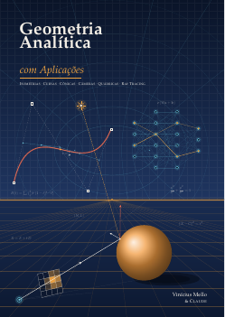

Livro, materiais e ferramentas interativas do curso.

Geometria Analítica com Aplicações constrói a geometria a partir da álgebra e a acompanha, capítulo a capítulo, de uma aplicação computacional: transformações, curvas de Bézier, funções de distância, a óptica das cônicas, a câmera virtual e o ray tracing.
As mesas exemplificam o conteúdo do texto: cada uma põe na tela, para manipular com o mouse, as construções, exemplos e exercícios de uma seção do livro, que as cita no lugar em que aparecem. Elas não substituem a leitura; são o laboratório que a acompanha.